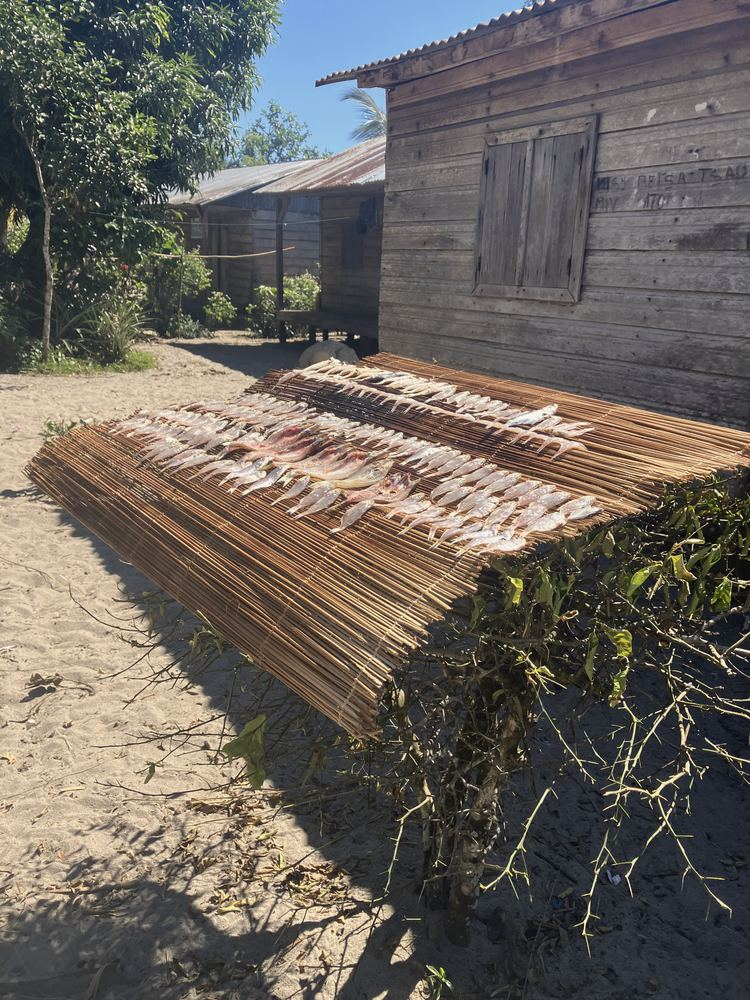

Penja
Lepironia mucronata · Marsh sedge
- Habitat
- Wetlands and freshwater marshes
- Part used
- Stems, harvested, dried and flattened
- Gestures
- Weaving mats, baskets and containers
- State of the resource
- To be documented with communities

Project sheet
Catalogue of materials
Names, uses and the state of each resource will be completed with knowledge holders as documentation progresses.
Lepironia mucronata · Marsh sedge
Raphia farinifera · Palm
Ravinala madagascariensis · Endemic Strelitziaceae



Objectives and results
The figures below are targets set out in the project’s monitoring documentation. They do not describe achievements.
Results will be published here after verification, with their date, source and the necessary permissions.
Separate projectsThis environmental project, the community farm and Hasina Immersion are distinct initiatives. Their objectives, funding, teams and results remain separate; no funding for one is used for another.
Botanical or mapping expertise, research on craft knowledge, support for craft value chains: tell us what you could bring.
Propose a contribution